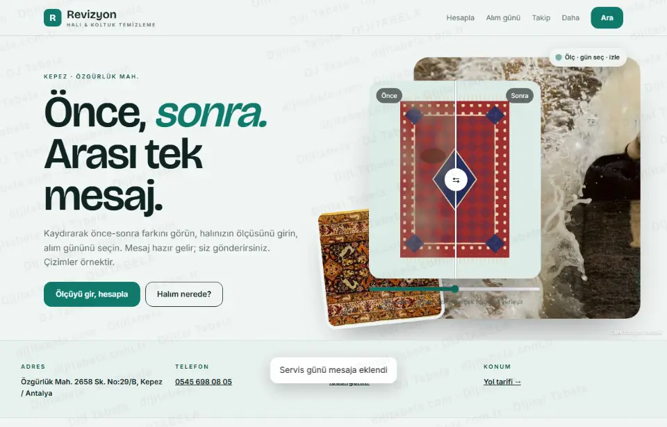
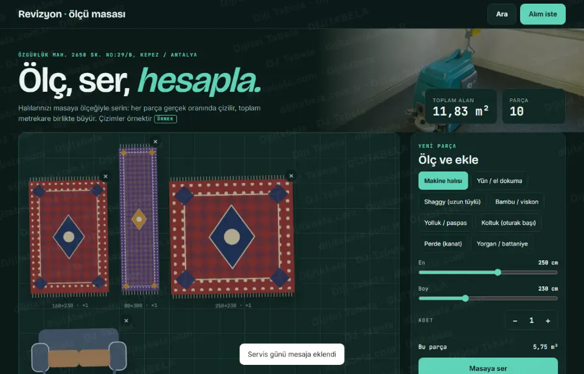
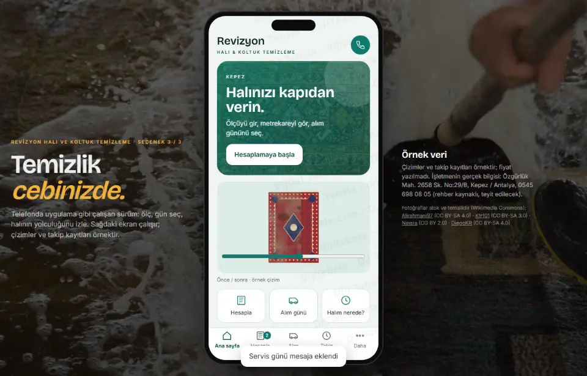

Halıyı ölçün, metrekareyi görün, alım gününü seçin, nerede olduğunu izleyin · 3 tasarım
Revizyon Halı ve Koltuk Temizleme’nın herkese açık kaydını inceledik: işletme local.gen.tr rehberinde telefonu ve adresiyle görünüyor (Özgürlük Mah. 2658 Sk. No:29/B, Kepez / Antalya). Rehber kaydında web alanı boş; kendi sitesi bulunamadı. Müşterinin halısını ölçüp metrekaresini görebildiği, alım gününü seçip hazır mesaj üretebildiği ve halısının hangi aşamada olduğunu izleyebildiği bir sayfa hazırladık. Üç tasarım da çalışır durumda. Listeler, süreler ve kayıtlar örnektir; bu turda fiyat yazılmadı; işletmenin gerçek bilgisi değildir ve hiçbir mesaj otomatik gönderilmez.

Aydınlık, editoryal; önce-sonra kaydırıcısı, ölçüye göre çizilen halı, alım ve takip.
Atölye yerleşimi: hesaplayıcı, liste, alım formu, takip hattıCanlı aç →
Koyu zeminde ölçekli masa: her halı gerçek oranında serilir, toplam m² büyür.
Araç yerleşimi: ölçekli zemin, sürgüler, istasyonlu takipCanlı aç →
Telefon çerçevesinde uygulama gibi: ana sayfa, hesapla, alım, takip.
Uygulama yerleşimi: alt menü, sekmeli ekranlarCanlı aç →- m² hesaplayıcı: halı tipi, en, boy ve adet girilince metrekare anında çıkar; koltuk oturak, yorgan adet ile listelenir (fiyat bu turda yazılmadı, mesajda sorulur)
- Ölçüye göre çizim: halı, girilen ölçünün oranında çizilir; liste birden çok parçayı toplar
- Alım günü: adres, gün ve zaman tercihi (sabah/öğle/akşam) seçilir
- Hazır mesaj: liste, toplam m², gün ve adresle mesaj üretilir; müşteri kendisi gönderir
- Teslim takibi: fiş koduyla Alındı → Yıkanıyor → Kuruyor → Teslim aşamaları görünür (örnek kayıt)
- Önce / sonra: kaydırıcıyla temizlik farkı (örnek çizim; gerçek fotoğraf yerleşir)
- Yeni · leke rehberi: leke türüne göre ilk 10 dakikada yapılacaklar ve yapılmayacaklar (genel bilgi), mesaja eklenebilir
- Yeni · ek hizmet sepeti: koltuk takımı, tekli koltuk, yorgan, perde tek dokunuşla listeye
- Yeni · yıkama sonrası bakım: açılır ipuçları
- Yeni · sadakat damga kartı: 10. yıkamada sürpriz kurgusu (örnek, bu cihazda)
- Yeni · mahalle servis günü: mahalle seçince örnek servis günleri takvimde yanar
Kaynakta yalnız şunlar görüldü: işletme adı, adres (Özgürlük Mah. 2658 Sk. No:29/B, Kepez / Antalya), telefon ve local.gen.tr rehber kaydı. Rehber kaydında web alanı boş; kendi sitesi bulunamadı. Süreler, takip kayıtları bu taslakta örnektir ve “örnek” etiketlidir. Çalışma saati, servis bölgesi ve hizmet kapsamı kaynakta yok; yazılmadı. Telefon rehber kaynaklıdır, yayından önce teyit edilir. Yorum veya istatistik yazılmadı. Fotoğraflar Wikimedia Commons’tan lisanslı stok görsellerdir ve temsilidir (işletmenin kendi fotoğrafı değildir); yazar ve lisans her sayfanın altında yazılı.